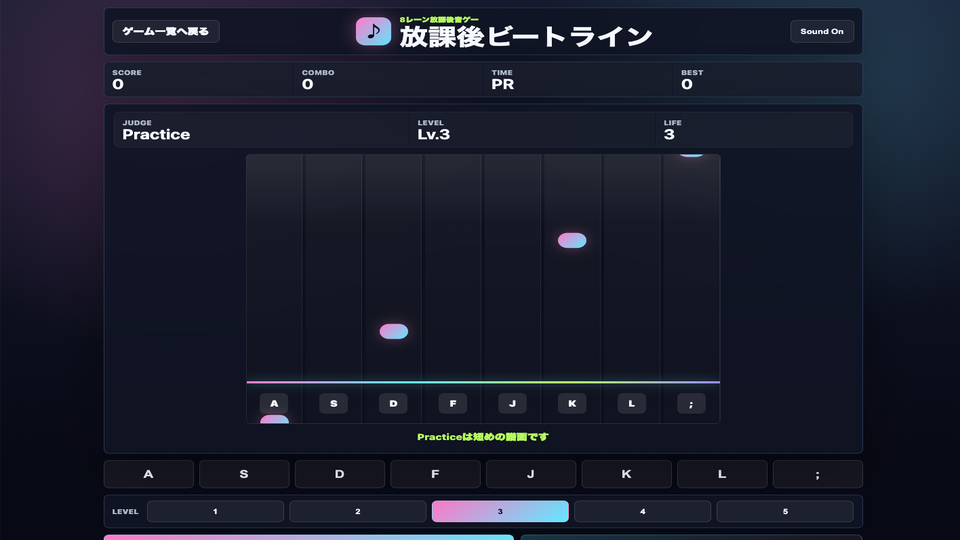

遊び方
- 流れてくるノーツが判定ラインに重なった瞬間に叩きます。
- 同時押しは最大2つまでです。
- ミスを3回すると終了です。
リズムゲーム / 音ゲー / 無料ブラウザゲーム
放課後ビートラインは、8レーンに流れるノーツをタイミングよく叩く無料ブラウザリズムゲームです。毎回変わるランダム譜面、5段階の速度レベル、ライフ制で短時間でもしっかり遊び応えがあります。

まずLevel 1〜2で8レーンの位置を覚え、慣れたら速度を上げましょう。ノーツを追いかけすぎず、判定ラインを中心に見るとコンボが安定します。
8レーンに流れるノーツを叩く無料ブラウザリズムゲームです。 ランダム譜面、5段階レベル、ライフ制があり、1分でも集中して遊べる音ゲーです。
音ゲー、リズムゲーム、短時間スコアアタックが好きな人におすすめです。判定ラインだけを見る意識にすると、8レーンでもタイミングを合わせやすくなります。
はい。無料ブラウザゲーム広場では、インストール不要で無料プレイできます。
スマホ・PC対応です。スマホでは画面下の8つのボタンをタップしてノーツを叩きます。
プレイ時間の目安は約1分です。短時間で遊べるミニゲームを探している人にも向いています。
放課後ビートラインと近い無料ブラウザゲームを、目的や端末別の入口から探せます。